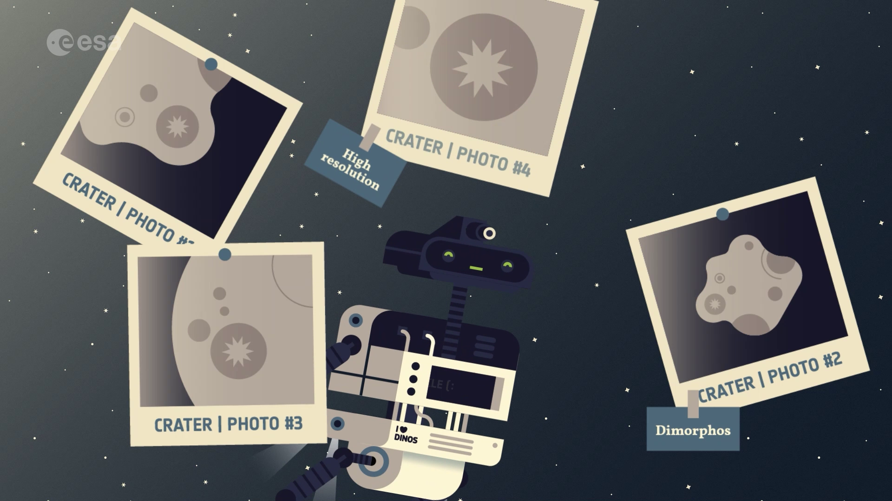
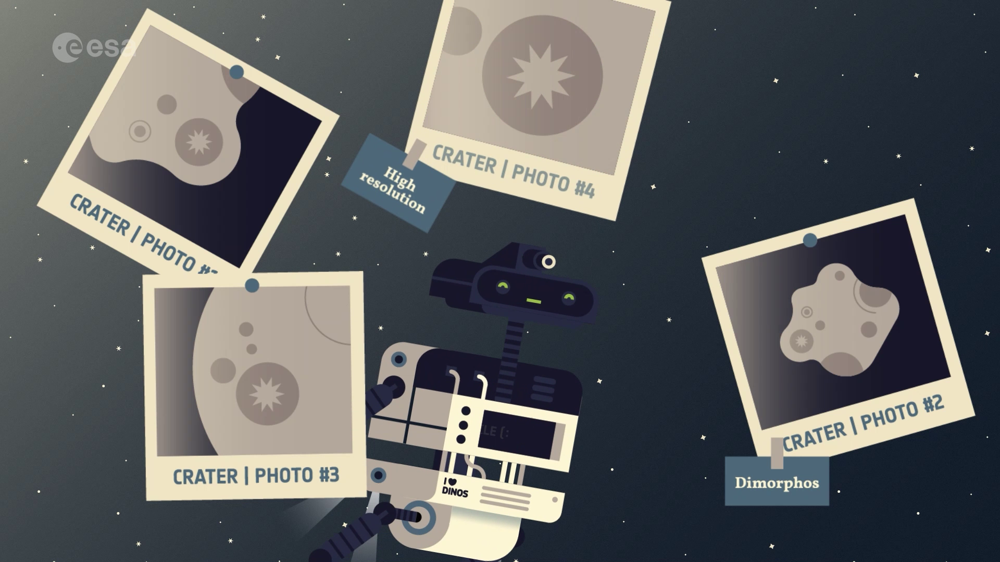

Webb and Hubble capture detailed views of DART impact
Two of the great space observatories, the NASA/ESA/CSA James Webb Space Telescope and the NASA/ESA Hubble Space Telescope, have captured views of a unique experiment to smash a spacecraft into a small asteroid. Observations of NASA’s Double Asteroid Redirection Test (DART) impact mark the first time that Webb and Hubble were used to simultaneously observe the same celestial target.
On 26 September 2022 at 01:15 CEST, DART intentionally crashed into Dimorphos, the asteroid moonlet in the double-asteroid system of Didymos. It was the world’s first test of the kinetic impact technique using a spacecraft to deflect an asteroid by modifying the object’s orbit. DART is a test for defending Earth against potential asteroid or comet hazards.
The observations are more than just an operational milestone for each telescope – there are also key science questions relating to the makeup and history of our Solar System that researchers can explore when combining the capabilities of these observatories.
Observations from Webb and Hubble together will allow scientists to gain knowledge about the nature of the surface of Dimorphos, how much material was ejected by the collision, and how fast it was ejected. Additionally, observing the impact across a wide array of wavelengths between Webb and Hubble will reveal the distribution of particle sizes in the expanding dust cloud, helping to determine whether it threw off lots of big chunks or mostly fine dust. Combining this information will help scientists to understand how effectively a kinetic impact can modify an asteroid’s orbit.
Webb captures impact site before and after collision

Webb took one observation of the impact location before the collision took place, then several observations over the next few hours. Images from Webb’s Near-Infrared Camera (NIRCam) show a tight, compact core, with plumes of material appearing as wisps streaming away from the centre of where the impact took place.
Observing the impact with Webb presented the flight operations, planning, and science teams with very unique challenges. Because of the asteroid’s speed of travel across the sky, the teams worked in the weeks leading up to the impact to enable and test a method of tracking asteroids moving over three times faster than the original speed limit set for Webb.
Scientists also plan to observe the asteroid in the coming months using Webb’s Near-Infrared Spectrograph (NIRSpec), developed under ESA leadership, and Mid-Infrared Instrument (MIRI), which was a joint ESA-NASA creation. Spectroscopic data from these innovative instruments will provide researchers with insight into the asteroid’s chemical composition.
Webb observed the impact over five hours total and captured 10 images. The data were collected as part of Webb’s Cycle 1 Guaranteed Time Observation Program 1245 led by Heidi Hammel of Association of Universities for Research in Astronomy (AURA).
Hubble images show movement of ejecta after impact
Hubble also managed to capture observations of the moonlet ahead of the impact, then again 15 minutes after DART met the surface of Dimorphos. Images from Hubble’s Wide Field Camera 3 show the impact in visible light. Ejecta from the impact appear as rays stretching out from the body of the asteroid. The bolder, fanned-out spike of ejecta to the left of the asteroid is where DART impacted.
Some of the rays appear to be curved slightly, but astronomers need to take a closer look to determine what this could mean. In the Hubble images, astronomers estimate that the brightness of Didymos increased by three times following the impact, and are also particularly intrigued by how that brightness then held steady, even eight hours after impact.
Hubble will monitor Dimorphos ten more times over the next three weeks. These regular, relatively long-term observations as the ejecta cloud expands and fades over time will paint a more complete picture of the cloud’s expansion from the ejection to its disappearance.
Hubble captured 45 images in the time immediately before and following DART’s impact with Dimorphos. The Hubble data was collected as part of Cycle 29 General Observers Program 16674.
Follow up with ESA’s Hera mission
Due to launch in late 2024, ESA’s Hera mission will perform a detailed post-impact survey of the target asteroid Dimorphos. Hera will turn the grand-scale experiment into a well-understood and repeatable planetary defence technique that might one day be carried out for real.
Ian Carnelli, Hera mission manager says: “We’ve been looking forward to the DART impact for over 17 years, and it’s so exciting to see it through the eyes of the greatest space observatories Webb and Hubble. These images provide us with clues of what happened in the first hours after impact, and clearly there is much more happening than we had foreseen! It makes the Hera mission even more important now as we absolutely need to get up close to Didymos to understand in full detail what really happened.”
Just like Webb and Hubble, NASA’s DART and ESA’s Hera missions are a great example of what international collaboration can achieve: the two missions are supported by the same teams of scientists and astronomers, and take place through an international collaboration called AIDA – the Asteroid Impact and Deflection Assessment.
NASA and ESA worked together in the early 2000s to develop asteroid monitoring systems, but recognised there was a missing link in the chain from asteroid threat identification to ways of addressing that threat. In response NASA oversaw the DART mission while ESA developed the Hera mission to gather additional data on DART’s impact.
With the Hera mission, ESA is assuming even greater responsibility for protecting our planet and ensuring that Europe plays a leading role in the common effort to tackle asteroid risks.
As Europe’s flagship planetary defender, Hera is supported through the Agency’s Space Safety programme, part of the Operations Directorate. Read about future plans to be proposed at ESA’s Council at Ministerial Level this November.
 

Access the video
More information
The James Webb Space Telescope is an international partnership between NASA, ESA and the Canadian Space Agency (CSA).
Webb is the largest, most powerful telescope ever launched into space. Under an international collaboration agreement, ESA provided the telescope’s launch service, using the Ariane 5 launch vehicle. Working with partners, ESA was responsible for the development and qualification of Ariane 5 adaptations for the Webb mission and for the procurement of the launch service by Arianespace. ESA also provided the workhorse spectrograph NIRSpec and 50% of the mid-infrared instrument MIRI, which was designed and built by a consortium of nationally funded European Institutes (The MIRI European Consortium) in partnership with JPL and the University of Arizona.
The Hubble Space Telescope is a project of international cooperation between ESA and NASA.